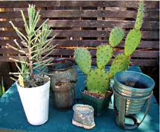

| Newsletter of the Cactus and Succulent Society of San Jose |
|
|
What have you done with your Raffle plants
or Country Store "booty"? Whether you came to the most recent Country Store event or a previous one, you usually go home with an odd mix of plants and pots. And what about those raffle plants that are given out at the meetings? They will be a part of this program too! This month's program is an opportunity to show fellow club members how you’ve creatively put together what you’ve received. If you are unsure of what to do with your plants and pots, feel free to bring them in to the meeting and ask for suggestions. I guarantee that you’ll go home with plenty of ideas by the end of the meeting.
|
| The Cactus Courier is the newsletter of the Cactus and Succulent Society of San Jose (CSSSJ). The members of the CSSSJ freely contribute the materials published herein. The accuracy of information and opinions expressed are those of the contributors. Scannable hardcopy and Windows format text files sent via email or on CD or DVD are acceptable as input. Send newsletter articles to Rich Kroll at: csssj@ckart.com |